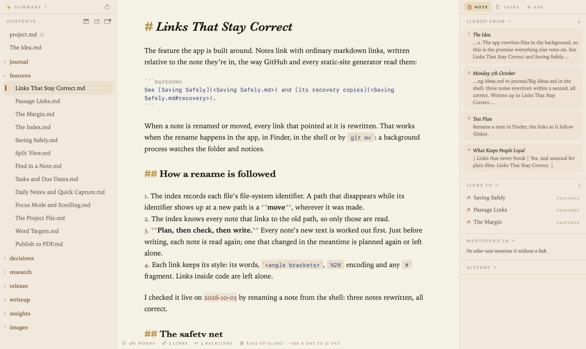

docs
Grasmere is a quiet place on your Mac for your best ideas. It’s for writers, students and anyone learning something: write notes, link them together, and come back to see how they connect.
Every note is a plain Markdown file in a folder you choose. There’s no database and no special syntax, so your notes read just as well in any other editor, on GitHub, or in git. Rename or move a note, in Grasmere, in Finder or in a terminal, and every link to it is rewritten to match.
Grasmere is private. There’s no account and nothing is collected. Your notes stay on your Mac unless you choose to send them somewhere: the optional AI features run on your Mac by default, and use Claude or ChatGPT only if you add your own key.

Download on the Mac App Store. Grasmere needs macOS 26 or later.
- Start Here: a hands-on tour, using a small sample notebook
- Guides: every feature in detail
- Support: questions, and how to report a problem
- Privacy: the privacy policy
Contents
Notes 3
examples 3
examples / ideas 4
examples / Insights 1
examples / journal 2
examples / people 1
examples / places 1
guides 18
- Ask Your Notes and AI
- Daily Notes
- Find and Search
- Focus Mode and Split View
- Guides
- Keyboard Shortcuts
- Links and Backlinks
- Pictures and Tables
- Publishing
- Quick Capture and Sharing
- Saving, Safety and Git
- Tasks and Due Dates
- The Contents
- The Index
- The Margin
- Themes and Settings
- Writing and Formatting
- Writing Goals